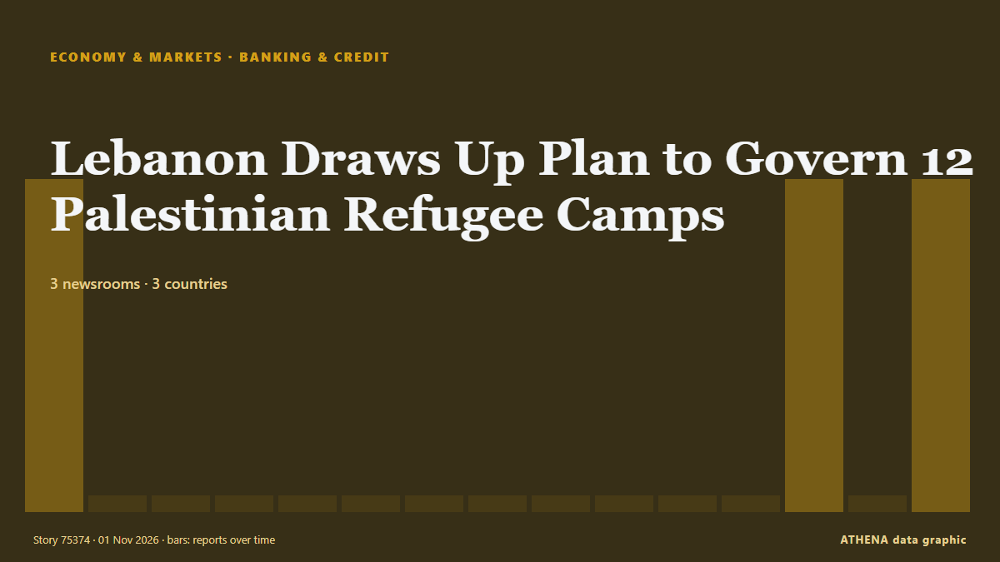

Banca y crédito
| 19 oct | 0 |
|---|---|
| 20 oct | 0 |
| 21 oct | 0 |
| 22 oct | 0 |
| 23 oct | 0 |
| 24 oct | 0 |
| 25 oct | 2 |
| 26 oct | 1 |
| 27 oct | 1 |
| 28 oct | 3 |
| 29 oct | 6 |
| 30 oct | 9 |
| 31 oct | 2 |
| 1 nov | 0 |
Los titulares se muestran en inglés, tal como se publicaron.

Lebanon Draws Up Plan to Govern 12 Palestinian Refugee Camps
Publicado por 3 medios de 3 países desde el 31 oct. Primero en informar: Asharq Al-Awsat (English). ATHENA califica el riesgo en 1.0/10 (bajo), con un 67 % de confianza.
FG begins N50,000 monthly cash support for poor Nigerians
It warned Nigerians against fraudsters, advising beneficiaries not to disclose their personal identification numbers or Bank Verification Numbers (BVNs) to anyone. de Channels TV
Canada Pledges €500M Toward EU’s €90B Ukraine Loan
Canadian Prime Minister Mark Carney announced on Friday, Oct. de Kyiv Post
European Commission proposes 45 billion euros in funding for Ukraine for 2027
Of this amount, 31.7 billion euros would go toward weapons purchases. de TASS (English)
Bank of Japan's Transactions with the Government (Sept.)
Although core consumer inflation occasionally exceeded the target in the early 2020s, Friday marked the first time the Bank of Japan confirmed that its long-term inflation goal had been achieved. de Free Malaysia Today
New update on DWP benefits changes after announcement this week
There have been questions about timetables. de WalesOnline
Foreign bank branch in UAE fined Dh200 million
Dubai: The Central Bank of the UAE has imposed a financial penalty of Dh200 million on a branch of a foreign bank licensed in the UAE, pursuant to the provisions of the Federal decree law regarding… de Gulf News
UN Finds Age-Based Persecution of Palestinian Children
Palestinian children were deliberately targeted, a UN commission finds, extending its age-based persecution finding to the occupied West Bank. de TRT World
Fungus found in organic butter, woman wins Rs 1 lakh payout from shop, manufacturer
In Hyderabad, a woman discovered fungus in a packet of organic cooking butter she purchased. de Times of India
XPO’s pricing, operating initiatives drive Q3 beat
Driven by higher volumes and stronger pricing, XPO once again exceeded expectations as these factors continue to amplify the impact of its operational efficiency initiatives. de FreightWaves
Israeli army continues incursions in Hebron for 8th consecutive day amid tightened restrictions
Israeli forces raid Jilada, Ain Deir Baha neighborhoods, deploying large numbers of soldiers, local sources tell Anadolu. de Anadolu Agency (English)
Private sector benefiting from low lending rates – BoG Governor
Average lending rates in Ghana have declined from 30.25% in December 2024 to 15.7% in September 2026, while private sector credit growth has strengthened to 26.4%, according to the Governor of the… de MyJoyOnline
From Tata row to IDBI Bank sale: Rahul Gandhi vs Nirmala Sitharaman round 2
The Leader of Opposition in Lok Sabha also said “Indian business is not Modi and Shah’s plaything” de The Hindu
WA Labor MP sued for alleged $1 million unpaid loan in US
The MP is being sued in the United States Federal Court for more than $1 million. de Sydney Morning Herald
Bank of Japan to hold rates, signal further hikes
TOKYO: The Bank of Japan (BOJ) is set to keep interest rates steady on Friday but stress its focus on preventing underlying inflation from overshooting its two per cent target, suggesting scope to… de New Straits Times
Mortgage approvals fall further to lowest since 2023
Bank of England figures show 53,443 mortgages were approved for house purchases in September. de The Irish News (Belfast)
Venezuelan leader demands Bank of England return gold
CARACAS, Venezuela (AFP) — Venezuelan interim president Delcy Rodriguez demanded Wednesday the return of her country's gold reserves held at the Bank of England, where they were frozen more than six… de Jamaica Observer
Israeli settlers threaten West Bank families, attack journalists
Palestinian families face threats of expulsion as armed settlers establish a new outpost, while activists and journalists report violent assaults. de The New Arab